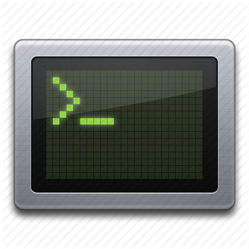

BIOS v1.0.3 - Cursed Systems Inc.
Memory Test: 512 MB OK
Detecting Hardware... [OK]
Press [DEL] to enter setup (Disabled)
 Fragment-1721540624-Cursed-Whispers.txt
Fragment-1721540624-Cursed-Whispers.txt
 Cursed Notes
Cursed Notes
 Archive Files
Archive Files

Dark Console
 Recycle Bin
Recycle Bin
 System Info
System Info
$CURSED - Fragment-1721540624-Cursed-Whispers.txt
$CURSED - Cursed Notes
$CURSED - Archive Files
- unknown_signal.dat
- corrupted_log.bin
- hidden_key.txt
$CURSED - Dark Console
> Accessing archive... ERROR: Access Denied
> Running deep scan... ANOMALY DETECTED
> ca: 0xb6124ac10570cc481842c9291d05f1b929d86e309cb52c1f3dba0b3397574b47::cursed::CURSED
$CURSED - Recycle Bin
Deleted files: [REDACTED]. Recovery impossible.
$CURSED - System Info
OS: CursedOS v6.66
CPU: Unknown (Overclocked)
Status: COMPROMISED